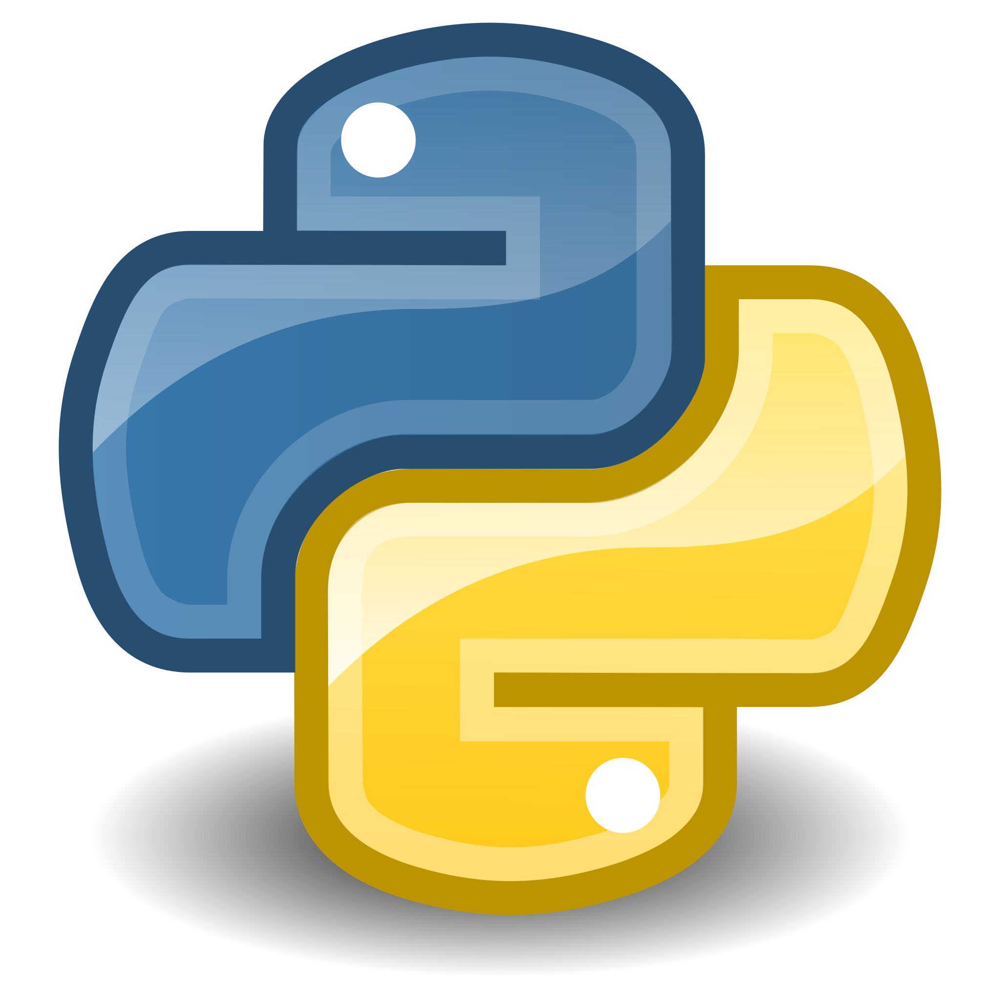

Skills
An overview of my technical skills and experience.
C Programming

I started learning C programming as part of my undergraduate curriculum. My first project was a calculator that included basic operations like addition, subtraction, multiplication, division, and modulus. This experience solidified my understanding of fundamental programming concepts such as loops, conditionals, and functions.
C++ Programming

Building on my knowledge of C, I advanced to C++ to leverage its object-oriented features. One of my significant projects in C++ was a multiplication game that helped me understand classes and objects, inheritance, and polymorphism. Currently, I am applying C++ to data structures and algorithms, enhancing my problem-solving skills.
Python Programming
Python's simplicity and versatility have made it my go-to language for many projects. I have developed a number guessing game and a tic-tac-toe game in Python. These projects not only honed my coding skills but also my ability to write clean, efficient code. I am currently exploring Python for data analysis and machine learning.
Web Development

Web development is a field I am passionate about. I have experience in HTML, CSS, and JavaScript, which I utilized in developing 'Punah-पुस्तक,' an online marketplace for second-hand books. This project also involved working with Firebase and version control using Git, enhancing my skills in web development and project management.
Critical Thinking

Critical thinking is a skill I have cultivated through my various projects and academic endeavors. It involves analyzing problems, brainstorming solutions, and evaluating outcomes to make informed decisions. This skill has been instrumental in debugging and optimizing code, as well as in project management.
Team Management
As the Student Ambassador @theesportsclub, I have developed strong team management skills. Leading projects and organizing events have taught me how to coordinate with team members, delegate tasks, and ensure successful completion of projects. These experiences have significantly improved my leadership and communication abilities.
Search Engine Optimization (SEO)
My work on 'Punah-पुस्तक' also included enhancing the website's visibility through SEO techniques. I learned how to optimize web content, use keywords effectively, and improve the website's search engine ranking. This skill is crucial for driving traffic and increasing the reach of web projects.
Version Control (Git)

Version control is a critical aspect of modern software development. I have been using Git for managing code versions and collaborating with team members on various projects. My experience with Git includes branching, merging, and resolving conflicts, ensuring efficient and error-free code management.